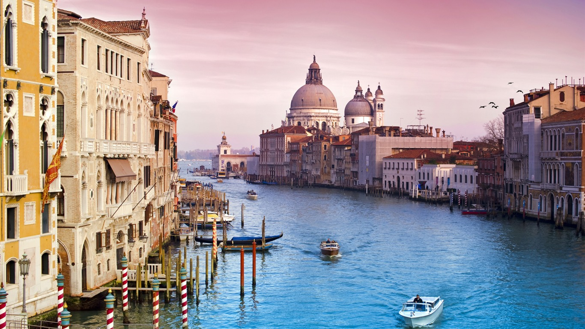
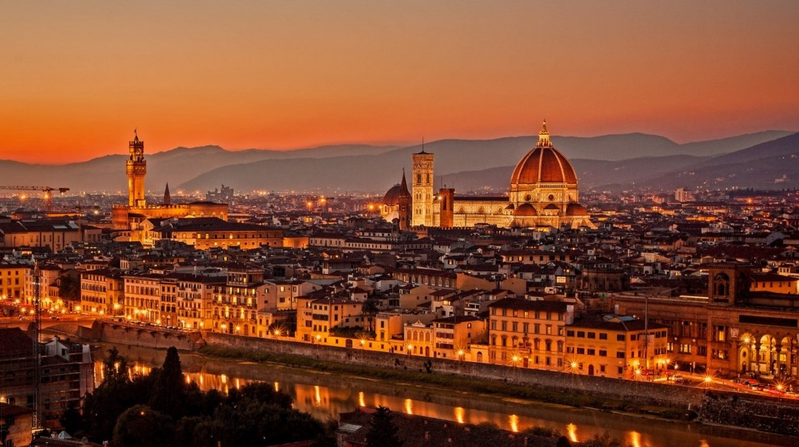

Bem-vindo a EuroTour
Sobre nós
EuroTour é um site que ajuda você a planejar sua próxima viagem, desde a compra das passagens, até a escolha dos passeios! Se tiver dúvidas do seu próximo destino aproveite para ler nossa página de pontos turísticos, vai que seja amor a primeira vista?
Países
Itália |
|
|  | VenezaHá quem procure Veneza pelo acervo majestoso de obras de arte, pelos mistérios escondidos nas suas intrincadas vielas ou pelo pôr do sol. Inclusive, este último ganha um significado ainda mais especial se contemplado de dentro das tradicionais gôndolas, passeio preferido de casais de namorados(as) e recém-casados(as). |
|  | FlorençaDurante a Idade de Ouro florentina, a cidade foi habitada por muitos artistas importantes como Michelangelo, que contribuíram para as belas obras deixadas nela. É uma das cidades mais bonitas do mundo por vários motivos, sendo um deles por abrigar grande parte do tesouro artístico da humanidade. |
Brasil |
|
 |
RecifeÉ a capital do estado de Pernambuco e localiza-se na costa nordestina do litoral brasileiro. Possui um clima tropical fortemente influenciado pela umidade proveniente do oceano. A história da cidade está atrelada ao processo de colonização brasileiro. |